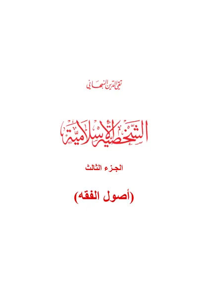

الشخصية الإسلامية - الجزء الثالث
Asy-Syakhshiyah al-Islamiyah (Jilid 3)
Baca Asy-Syakhshiyah al-Islamiyah (Jilid 3) (الشخصية الإسلامية - الجزء الثالث) karya Taqiyuddin an-Nabhani secara gratis di Maktabah Ilmu: teks Arab, Indonesia. Tanpa daftar, tanpa iklan.
Buka kitab iniLihat lemari ilmuDaftar isi
- المقدمة
- محتـويات الكتـاب
- أصول الفقه
- الحاكم
- المكلَّفون بالأحكام
- الحكم الشرعي
- خطاب التكليف
- خطـاب الوضع
- الأدلّـة الشـرعية
- الدليل الأول الكتـاب
- الدليل الثاني السُّـنّة
- أبحـاث اللغة
- المنطـوق والمفهـوم
- أقسـام الكتـاب والسُّـنّة
- الأمر والنهي
- العموم والخصوص
- المطلق والمقيد
- المجمل
- البيان والمبين
- الناسخ والمنسوخ
- الدليل الثالث الإجمـاع
- الدليل الرابع القياس
- مقاصد الشريعة
- ما ظن أنه دليل وليس بدليل
- شرع من قبلنا
- مذهب الصحابي
- الاستحسان
- المصالح المرسلة
- القواعد الكلية
- قاعدة الاستصحاب
- قاعدة الضرر
- الاصطلاح، والتقدير، والعرف
- مآلات الأفعال
- آراء الصحابة، وأقضيتهم، واجتهادهم
- التعادل والتراجيح